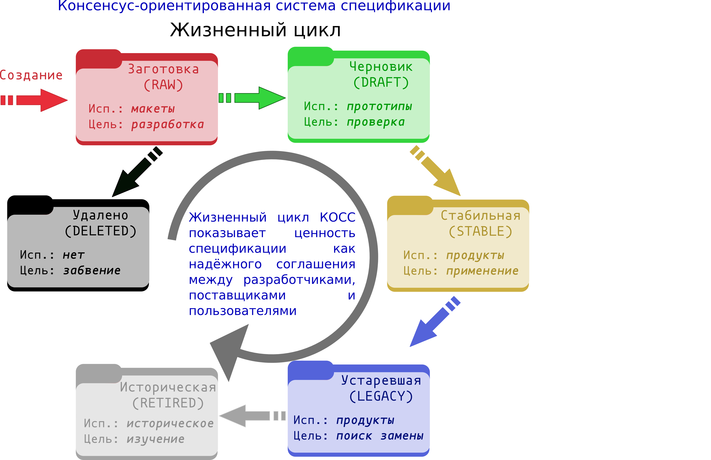

КОСС
Консенсус-Ориентированная Система Спецификаций
Этот документ описывает консенсус-ориентированную систему спецификаций(КОСС) для построения переносимых технических спецификаций. КОСС основан на лёгком процессе правки, который направлен на вовлечение как можно большего числа заинтересованных сторон и достижения консенсуса через написание рабочих реализаций.
- Имя: www.digistan.org/spec:1/COSS (1/COSS)
- Редактор: Pieter Hintjens ph@imatix.com
- Соавторы: André Rebentisch <andre@openstandards.de>, "Alberto Barrionuevo" <abarrio@opentia.es>, Chris Puttick <chris.puttick@thehumanjourney.net>
- Переводчик: Павел Плетенев <cpp.create@gmail.com>
Лицензия
Copyright (c) 2008-09 Редактор и Соавторы. Copyright (c) 2017 Переводчик.
This Specification is free software; you can redistribute it and/or modify it under the terms of the GNU General Public License as published by the Free Software Foundation; either version 3 of the License, or (at your option) any later version.
This Specification is distributed in the hope that it will be useful, but WITHOUT ANY WARRANTY; without even the implied warranty of MERCHANTABILITY or FITNESS FOR A PARTICULAR PURPOSE. See the GNU General Public License for more details.
You should have received a copy of the GNU General Public License along with this program; if not, see http://www.gnu.org/licenses.
Процесс изменений
Этот документ управляется Консенсус-Ориентированной Системой Спецификаций (КОСС).
Язык
Термины "ДОЛЖНО", "ДОЛЖНА", "ДОЛЖНЫ", "ДОЛЖЕН", "ОБЯЗАТЕЛЬНЫЙ", "ОБЯЗАТЕЛЬНО" (MUST, REQUIRED, SHALL), "НЕ ДОЛЖЕН", НЕ ДОЛЖНА", "НЕ ДОЛЖНЫ" (MUST NOT, SHALL NOT), "РЕКОМЕНДОВАНО" (SHOULD, RECOMMENDED), "НЕ РЕКОМЕНДОВАНО" (SHOULD NOT, NOT RECOMMENDED), "МОГУТ", "МОЖЕТ" (MAY, OPTIONAL) в рамках этого документа ДОЛЖНЫ интерпретироваться в соответствии с RFC 2119[1].
Цели
Основной целью КОСС является упрощение написания, проверки и улучшения новых технических спецификаций. "Техническая спецификация" определяет протокол, процесс, программный интерфейс, использоание языков, методологию и другие аспекты технической среды, которые могут быть задокументированы для дальнейшего использования с целью технической и социальной совместимости.
КОСС предназначен быть, кроме прочего, экономичным и быстрым, таким образом, чтобы быть полезным небольшим командам, у которых мало времени на формальные процессы.
Принципы:
- Мы нацелены на общий консенсус и рабочий код.
- Спецификации - это небольшие документы, создаваемые небольшими командами.
- Спецификации должны иметь выявленного отвественного редактора.
- Процесс должен быть прозрачным, объективным, и каждый должен иметь доступ к нему.
- Процесс должен явно отделять эксперименты от решений.
- Процесс должен позолять отбраковку старых спецификаций.
Спецификация должна быть такой, чтобы её можно было объяснить за минуты, придумать за часы, написать за дни, проверить за несколько недель, утвердить за месяцы и заменить лишь за годы.
Спецификации не имеют особого статуса, за исключением того, что предоставляется сообществом.
Архитектура
КОСС создаётся на основе быстрых, но простых в использовании методов взаимодействия. В основном КОСС использует модель Википедии для редактирования и публикации текстов спецификаций.
- Домен - место хранения набора спецификаций для определённой области.
- Каждый домен реализуется в виде домена в сети Интернет, на котором размещается wiki и, дополнительно, другие методы взаимодействия.
- Каждая спецификация - это набор страниц wiki, а также комментарии, приложенные файлы и другие ресурсы.
- Важные спецификации могут существовать в качестве поддоменов, т.е. дочерних wiki.
Отдельные личности могут стать членами домена, пройдя необходимую проверку. Правовые, патентные и торгово-марочные политики домена должны быть определены в политике по интеллектуальной собственности, применяемой к домену.
Спецификации существуют как отдельные страницы, по одной странице на одну версию спецификации (см. раздел "Разветвление и соединение" ниже), которым могут быть назчены URI, которые включают увеличивающийся номер. Таким образом, мы ссылаемся на спецификацию, указывая домен, номер и короткое имя спецификации. Каждая новая версия одной и той же спецификации таким бразом обладает новым номером. Пример формы ссылки на спецификацию:
<домен>/spec:<номер>/<короткое_имя>
Например, эта спецификация называется www.digistan.org/spec:1/COSS. При ссылках в пределах одного домена возможно использование короткой ссылки в ввиде 1/COSS.
Каждая спецификация (включая ветви) обладает отдельным номером. Более низкие номера говорят о более зрелой спецификации, более высокие - о более экспериментальной.
Жизненный цикл КОСС
Каждая спецификация имеет независимый жизненный цикл, который явно определяет его текущий статус.
Спецификация может находится в одном из шести состояний, которые отражают её зрелость и ценность в качестве соглашения:

Заготовка спецификации (RAW)
Каждая новая спецификация становится заготовкой. Изменения в ней могут быть любыми и односторонними. Разработчики, желающие реализовать грубый черновик спецификации, должны попросить сделать его черновиком спецификации. Заготовки не имеют никакой ценности в качестве соглашения.
Черновик спецификации (DRAFT)
Когда заготовка спецификации может быть продемонстрирована, она становится черновиком. Изменения в черновик должны вносится только после обсуждения с пользователями спецификации. Черновик - это соглашение между редакторами спецификации и её реализаторами.
Стабильная спецификация (STABLE)
Когда спецификация начинает использоваться третьими лицами, она становится стабильной. Изменения в спецификацию могут вносится только в частях разъяснения и устранения ошибок. Стабильные спецификации - это соглашение между редакторами, реализаторами и конечными пользователями спецификации.
Устаревшие спецификации (LEGACY)
Когда стабильная спецификация заменяется более новой черновой, она становится устаревшей. Устаревшие спецификации не должны изменяться кроме добавления указаний на заменившие их спецификации, если таковые существуют. Устаревшие спецификации - это соглашение между редакторами, реализаторами и конечными пользователями спецификации.
Исторические спецификации (RETIRED)
Когда устаревшие спецификации перестают использоваться в продуктах, они становятся историческими. Исторические спецификации имеют только историческую ценность и не должны меняться, кроме случаев добавления указаний на заменившие их спецификации, если таковые существуют. Исторические спецификации не имеют никакой ценности в качестве соглашения.
Удалённые спецификации (DELETED)
Когда заготовка или черновик спецификации заброшены, они становятся удалёнными. Чтобы изменить удалённую спецификацию, редактор должен сначала сделать её заготовкой. Удалённые спецификации не имеют никакой ценности в качестве соглашения.
Заготовки и черновики ДОЛЖНЫ БЫТЬ переведы в статус удалённых, если они не меняются или не используются в период 3-6 месяцев для заготовки и 9-18 месяцев для черновика.
Контроль над правками
У спецификации должен быть один, ответственный за неё, редактор, который является единственным лицом имеющим право правки и изменения статуса спецификации. Спецификация может иметь дополнительных соавторов, которые вносят правки через редактора. Именно он отвественен за аккуратное поддержание статуса спецификации и за управление всеми комментариями к спецификации.
Ветвление и слияние
Любой член домена МОЖЕТ ответвить спецификацию в любой момент работы над спецификацией. Ветвление выполняется путём копирования существующего текста спецификации и создания новой спецификации с тем же наполнением и именем, но новым номером. Возможность ветвления спецификации необходимо в следующих обстоятельствах:
- Изменение отвественного редактора, как в кооперации текущим редактором, так и без неё.
- Для омоложения спецификации, которая является стабильной, но нуждается в функциональных изменениях. Ветвление стабильной или устаревшей спецификации - правильный способ создания новой версии для такой спецификации.
- Для решение диспутов между разными техническими решениями.
Отвественным редактором ответвившейся спецификации становится человек, ответвивший ей.
Ветви, включающие дополнения от соавторов, являются производными и, таким образом, лицензируются на тех же условиях, что и исходная спецификация. Это означает, что соавтоам гарантируется право объединять изменения, внесенные в ветви, в их исходные спецификации.
Говоря в общем, ветвь спецификации - это отдельная спецификация, несмотря на то, что имя у неё то же. Ветви не имеют особого статуса, за исключением тех, что предоставляются сообществом.
Решение конфликтов
КОСС решает конфликты между командами и поставщиками, разрешая любому определять новые спецификации. Нет никакого особого контроля над правками, за исключением того, который ведёт отвественный редактор спецификации. Администраторы домена (модераторы) могут вмешаться в конфликты правок и могут приостановить или запретить правки тех персон, поведение которых покажется им неуместным.
Соглашения
Там, где это возможно редакторы и соавторы поощеряются выполнять следующее:
- Ссылаться и использовать существующие работы, особенно спецификации организации IETF.
- Дополнять существующие спецификации вместо того, чтобы создавать собственные.
- Использовать модель совместного ветвления и слияния как средство для экспериментов.
Список литературы
- Bradner, S., “Key words for use in RFCs to Indicate Requirement Levels”, BCP 14, RFC 2119, March 1997. URL: https://tools.ietf.org/html/rfc2119